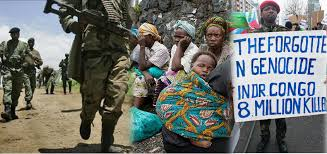

The conflict in Congo is one of the deadliest in modern history, yet it often remains overlooked by the global community. This site aims to shed light on the ongoing genocide, focusing on its causes, consequences, and the toll it takes on millions of people. From political instability to the exploitation of Congo's rich natural resources, the roots of the violence run deep, but the voices of those affected deserve to be heard. We hope to bring awareness to this critical issue and inspire collective action.
